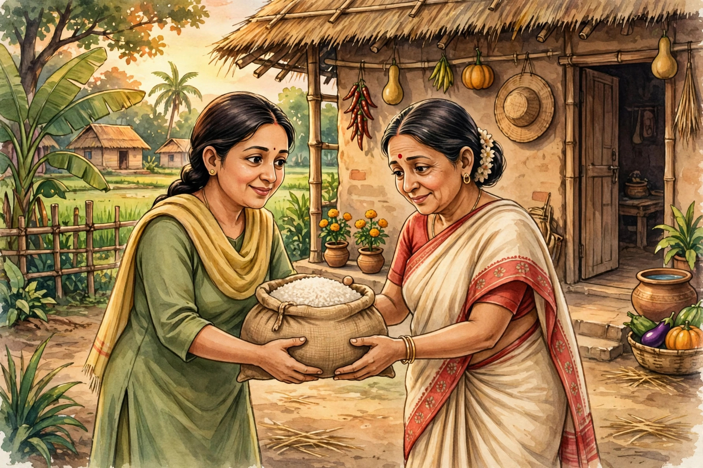

অন্নপূর্ণা ভান্ডার: মাসে ৩,০০০ টাকা — সম্পূর্ণ গাইড

লক্ষ্মীর ভান্ডার এখন অন্নপূর্ণা ভান্ডার! ১ জুন ২০২৬ থেকে এই নামে প্রকল্প চলছে। মহিলারা প্রতি মাসে ৩,০০০ টাকা সরাসরি ব্যাংক অ্যাকাউন্টে (DBT) পান।
নাম বদলালেও প্রকল্পের মূল উদ্দেশ্য একই — রাজ্যের মহিলাদের হাতে প্রতি মাসে নগদ টাকা তুলে দেওয়া, যাতে সংসারের ছোটখাটো খরচ, ছেলেমেয়ের পড়াশোনা বা নিজের প্রয়োজন মেটাতে কারও কাছে হাত পাততে না হয়। যাঁরা আগে লক্ষ্মীর ভান্ডার পেতেন, তাঁদের নতুন করে আবেদন করতে হবে না — একই প্রকল্প নতুন নামে চলছে।
💳 DBT কী এবং কেন জরুরি?
DBT মানে Direct Benefit Transfer — সরকারি টাকা সরাসরি আপনার ব্যাংক অ্যাকাউন্টে ঢোকে, মাঝে কোনো দালাল বা অফিসের হাত ঘোরে না। এতে দুর্নীতি কমে আর টাকা দ্রুত পৌঁছায়। কিন্তু DBT কাজ করার জন্য ব্যাংক অ্যাকাউন্টের সঙ্গে আধার লিংক (NPCI সিডিং) থাকা বাধ্যতামূলক। আধার লিংক না থাকলে সরকারের সিস্টেম জানতেই পারে না টাকাটা কোন অ্যাকাউন্টে পাঠাবে — তাই টাকা আটকে যায়।
👩 কারা পাবেন?
- বয়স ২৫ থেকে ৬০ বছর — পশ্চিমবঙ্গের মহিলারা
- কোনো ধর্মীয় শর্ত নেই — সব ধর্মের মহিলারাই সমানভাবে পাবেন
২৫ বছর বয়সসীমা রাখার কারণ — এই বয়সের পর সাধারণত মেয়েদের নিজের সংসার/পরিবারের দায়িত্ব বাড়ে, তখন এই মাসিক সাহায্য সবচেয়ে বেশি কাজে লাগে। আর ধর্মীয় শর্ত না থাকার মানে — হিন্দু, মুসলিম, খ্রিস্টান, সব সম্প্রদায়ের মহিলারা সমান অধিকারী। কেউ যদি বলে "অমুক ধর্মের লোক পাবে না", সেটা সম্পূর্ণ ভুল।
💸 টাকা না এলে কী করবেন?
টাকা না আসার সবচেয়ে বড় কারণ: ব্যাংক অ্যাকাউন্টে আধার-DBT / NPCI সিডিং না থাকা। ব্যাংকে গিয়ে আধার সিডিং করিয়ে নিন।
আধার সিডিং কীভাবে করবেন (ধাপে ধাপে):
- আপনার ব্যাংকের শাখায় যান, আধার কার্ড ও ব্যাংকের পাসবই নিয়ে
- কাউন্টারে বলুন "আধার সিডিং / NPCI ম্যাপিং" করাতে চান
- ব্যাংক একটি ফর্ম দেবে — পূরণ করে জমা দিন
- ২-৩ দিনের মধ্যে লিংক হয়ে যায়; ব্যাংক থেকে কনফার্ম করে নিন
- সিডিংয়ের পরও টাকা না এলে ব্লকের সমাজকল্যাণ দপ্তরে যোগাযোগ করুন — আপনার নাম তালিকায় আছে কিনা যাচাই করুন
- ব্যাংক অ্যাকাউন্ট সচল আছে কিনা দেখুন — দীর্ঘদিন লেনদেন না হলে অ্যাকাউন্ট নিষ্ক্রিয় হয়ে যেতে পারে
- মোবাইল নম্বর ব্যাংকে আপডেট রাখুন, যাতে টাকা ঢোকার SMS পান
📞 হেল্পলাইন
- 82820 82820
- 1800-345-5505 (টোল ফ্রি — কল করতে টাকা লাগে না)
ফোন করার আগে আপনার আধার নম্বর ও ব্যাংক অ্যাকাউন্টের তথ্য হাতের কাছে রাখুন — তাহলে হেল্পলাইন থেকে দ্রুত আপনার সমস্যা খুঁজে বের করা যাবে। সকাল ১০টা থেকে সন্ধ্যা ৬টার মধ্যে ফোন করলে সাড়া পাওয়ার সম্ভাবনা বেশি।
⚠️ সতর্কতা: "অক্টোবরে ডবল টাকা (৬,০০০)" — এই খবর ভুয়ো। মুখ্যমন্ত্রীর ১২,০০০–১৫,০০০ টাকার কথাটি এখনো শুধু প্রস্তাব। ভুয়ো খবরে কান দেবেন না।
এই ধরনের গুজব কেন ছড়ায়? কিছু YouTube চ্যানেল ও Facebook পেজ ভিউ বাড়ানোর জন্য চমকপ্রদ থাম্বনেইল বানায়। যাচাই করার সহজ উপায় — সরকারি ঘোষণা ছাড়া কোনো "বড় খবর" বিশ্বাস করবেন না। মুখ্যমন্ত্রী বা সরকারি দপ্তর আনুষ্ঠানিকভাবে যা ঘোষণা করবে, সেটাই সত্যি। আমাদের ওয়েবসাইটে শুধু যাচাই করা তথ্যই দেওয়া হয়।
❓ সাধারণ প্রশ্ন (FAQ)
- লক্ষ্মীর ভান্ডার পেতাম, এখন কি নতুন করে আবেদন করতে হবে? — না। একই প্রকল্প নতুন নামে চলছে, আলাদা আবেদনের দরকার নেই।
- আধার সিডিং কী? — ব্যাংক অ্যাকাউন্টের সঙ্গে আধার নম্বর যুক্ত করা, যাতে সরকারি টাকা (DBT) সরাসরি ঢুকতে পারে। ব্যাংকে গিয়ে করাতে হয়।
- বয়স ৬০ পেরিয়ে গেলে কী হবে? — এই প্রকল্পের শর্ত ২৫–৬০ বছর।
- অক্টোবরে কি ডবল টাকা (৬,০০০) আসবে? — না, এটি ভুয়ো খবর। মাসে ৩,০০০ টাকাই নিয়ম।
- টাকা না এলে প্রথমে কী করবো? — ব্যাংকে গিয়ে আধার-DBT লিংক আছে কিনা যাচাই করুন; তারপর ব্লকের সমাজকল্যাণ দপ্তরে যোগাযোগ করুন।
🌐 আরও নতুন নতুন তথ্যের জন্য আমাদের ওয়েবসাইট ভিজিট করুন:
aicombo90.github.io/dafadar-online-seva
ওয়েবসাইটটা মোবাইলে সেভ/বুকমার্ক করে রাখুন যাতে হারিয়ে না যায়!
💬 তাজা আপডেট সবার আগে পেতে আমাদের WhatsApp গ্রুপে যোগ দিন:
WhatsApp গ্রুপে যোগ দিন →
📺 ভিডিওতে দেখতে চান? আমাদের YouTube চ্যানেল সাবস্ক্রাইব করুন:
@DafadarOnlineSeva